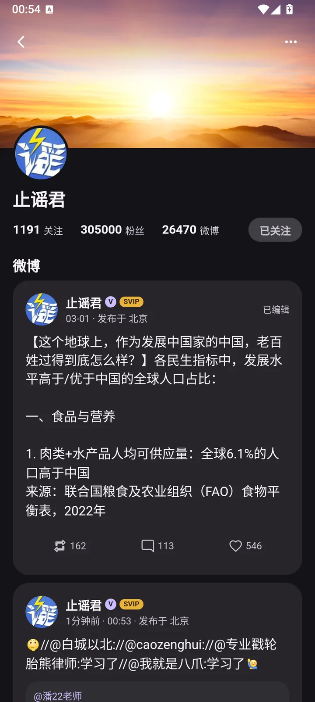
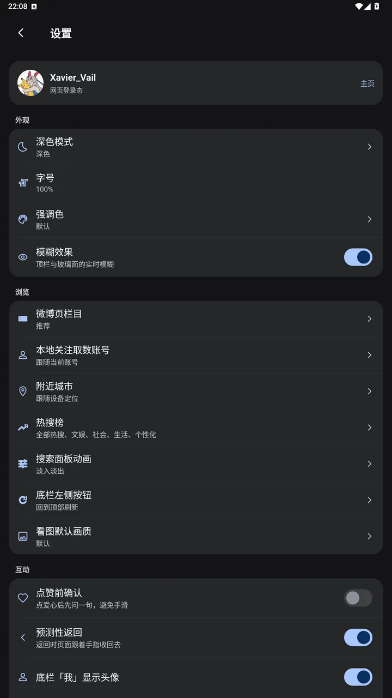

prism 设计语言
底栏是液态玻璃镜片，按下有 98.5% 的缩放回弹，进详情走跟手返回转场。整套来自 FlClash 的 prism_ui。
功能
从信息流到发布，19 个页面全部走通；下面这些是这一版最常用的部分。
底栏是液态玻璃镜片，按下有 98.5% 的缩放回弹，进详情走跟手返回转场。整套来自 FlClash 的 prism_ui。
关注、推荐、好友圈、特别关注、悄悄关注、本地关注、收藏、附近与自建分组；左右滑动切栏目，双击底栏回到最新。
转发块、九宫格、投票、编辑记录；评论按热度或时间排序，楼中楼可以整页展开，评论配图同样能点开、长按保存。
封面铺满状态栏底下，头像压住封面底边；下滑时封面裁短、头像缩小挪进顶栏，名字从大标题变成顶栏标题。
最多 9 张图、可见范围、话题联想、上传进度；写一半可以直接丢进草稿箱，下次接着改。
Cookie 写进应用私有目录，不经过任何中转服务；不发遥测，卸载应用即清空。所有请求直接发往微博接口。
截图
横向滚动查看。图片按显示尺寸下采样过，滚动不会卡。




安装
包是 arm64 的，覆盖现在绝大多数安卓手机。装之前请先卸载旧版本或确认签名一致。
在手机浏览器里打开
Releases 页面，
点 hobo-1.05.0-arm64.apk。
系统会拦一次，按提示给浏览器（或文件管理器）放开「安装未知应用」权限即可。
登录走网页授权，也可以粘贴 Cookie；不想登录就选纯本地模式，信息流照样能看。